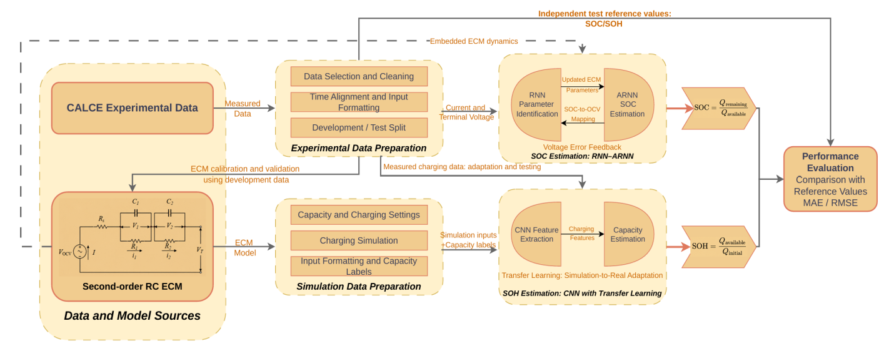
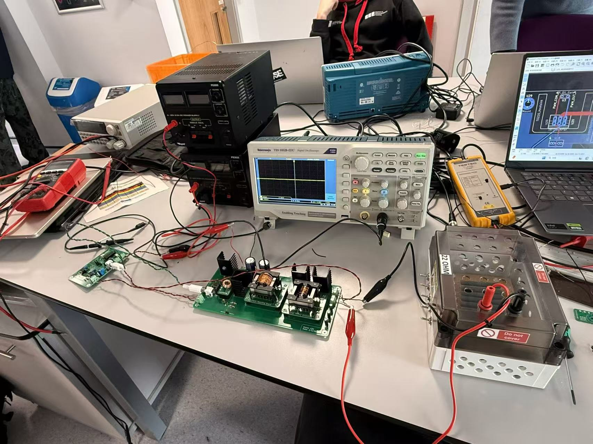
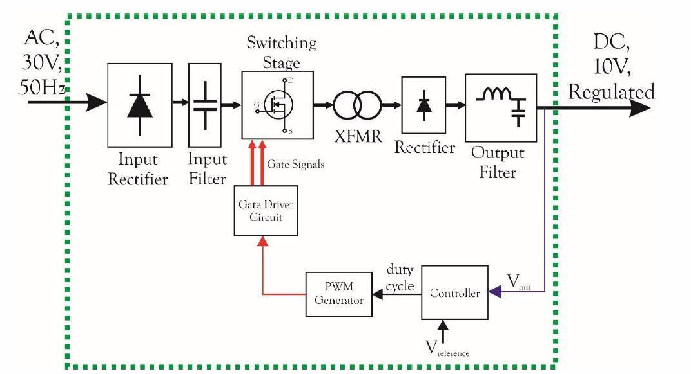
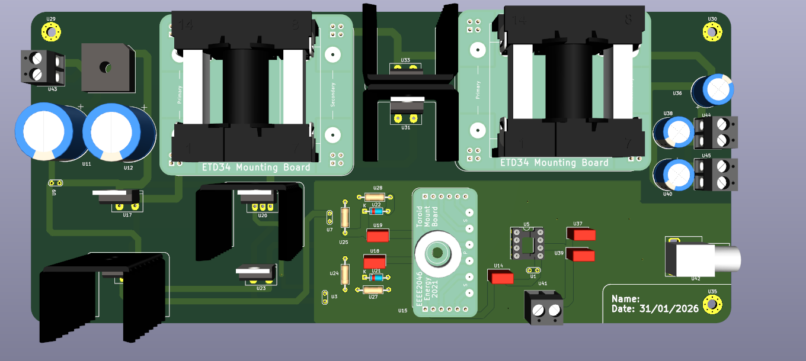
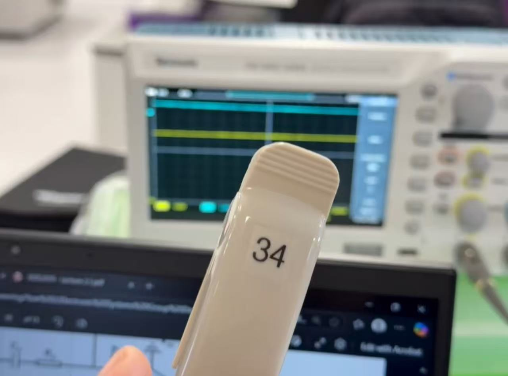
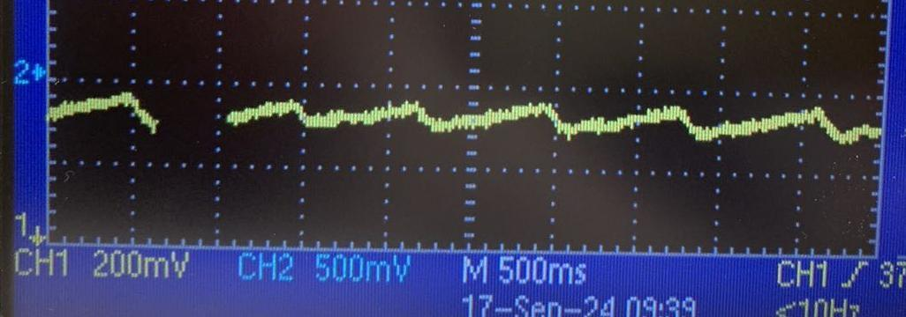
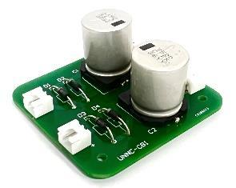

Measured battery data shown alongside the SOC and capacity-based SOH methods I am developing. Both timelines animate automatically; no model predictions are shown.
State of Charge (SOC)
Measured discharge segment · Cycle 8
Protocol-normalised estimate
Measured signals at cursor: voltage · current ·
The display uses all 668 measured samples. Current in this segment is nearly constant, so the measured capacity-based SOC estimate is close to smooth; voltage is shown as measured context. The workbook has no temperature column or calibrated voltage/temperature correction, so none is implied.
Capacity-based index: each cycle’s Step 16 discharge capacity divided by Cycle 1’s capacity. The incomplete Cycle 10 is excluded. This relative capacity-retention index is used as an SOH proxy; the workbook provides no rated-capacity reference.
How the measured data connects to the project methods
Measured dataDischarge time and capacity
→
Model representationSecond-order equivalent-circuit model
→
Method referenceMultitimescale RNN for SOC; planned capacity-based SOH route
The diagram is a method-flow illustration. Model parameter estimates and neural-network SOC/SOH results are not included.
University of Nottingham · Electrical & Electronic Engineering/GPA 3.86 / 4.0
About
I am an Electrical and Electronic Engineering student at the University of Nottingham. My work focuses on power electronics, electrical hardware and embedded systems, with experience across circuit design, PCB layout, signal processing and laboratory testing.
During my hardware R&D internship at Schneider Electric China, I worked on drive circuitry and PCB layout for a hybrid DC circuit breaker. I also studied IGBT current-performance methods and considered how they could inform circuit choices for the breaker. In an earlier electrical-design placement at Southwest Research and Design Institute of Chemical Industry, I learned about power distribution for chemical plants and electrical design for hazardous areas.
My project work includes a 50 W two-switch forward converter, a pulse-oximeter prototype, and low-power rectifier and boost circuits for vibration energy harvesting. These projects have involved tools and methods such as PLECS, MATLAB, KiCad, STM32, CPLD logic and bench testing.
I am now preparing my final-year project on battery state estimation for backup power systems. My current learning focuses on battery data processing, second-order equivalent-circuit models, and neural-network methods for estimating state of charge (SOC) and state of health (SOH). I am currently reading the literature and building the foundation for the implementation.
Current Final Year Project
IN PROGRESS
2026–27
Data-driven Key Features Estimation of Back-up Batteries for Critical Power Infrastructure
RESEARCH FOCUSBattery state for critical power
Project Overview
Develop and validate an ECM–neural-network framework to estimate lithium-ion battery state of charge (SOC) and capacity-based state of health (SOH) for backup-power applications.
SCOPE 01 · SOC
Online SOC estimation and second-order RC ECM parameter updates using a multitimescale RNN approach.
SCOPE 02 · SOH
Capacity-based SOH estimation using an ECM-generated charging dataset, CNN features and transfer learning, as outlined in my project plan.
Explore planned workflow, SOC method reference and SOH route ＋
Planned project workflow

Framework from my project outline: CALCE measurements and ECM simulation data feed separate SOC and SOH estimation routes.
01CALCE dataPrepare and split records
→
02Second-order RC ECMBuild, calibrate and validate
04Independent evaluationCompare estimates with references
Multitimescale RNN for SOC · Reference paper
SOC METHOD REFERENCE · ZHANG ET AL. (2025)
The cited RNN–ARNN paper supports the SOC workstream only. It uses a longer-timescale RNN to identify second-order ECM parameters and a shorter-timescale adaptive RNN to estimate SOC. Adagrad updates the parameter network; a fuzzy controller adjusts the SOC estimator’s learning rate. This paper does not describe the SOH route in my project plan.
For SOH, the plan proposes generating charging data at different capacity levels with the ECM, extracting features with a CNN, then adapting from simulated to measured data using transfer learning. This is a separate planned workstream; it is not attributed to the RNN–ARNN SOC paper.
REFERENCE PAPER RESULTS · SOC STUDY ONLY
In its FUDS, DST and US06 tests, the paper reports lower voltage RMSE than the compared RLS–UKF and EKF–EKF methods, SOC error below 4% after 6–14 seconds depending on drive cycle, and at least 66% less computation time than its GRU–RNN comparison. These are the paper authors’ results, not results from my FYP.
Project outline completed on 26 October 2026. I have been reading and summarising neural-network papers and have started collecting simulated battery data. Model implementation and validation are planned next steps.
Experience
Product development and industrial power systems
07 — 10 / 2026
Electronic Hardware R&D Intern
Internship
Schneider Electric China R&D Centre · Shanghai
Two connected workstreams in hybrid DC circuit breaker development: designing the breaker drive hardware and PCB, and researching transistor circuit options informed by an IGBT current-performance paper.
01
Hybrid DC circuit breaker design & PCB
Designed breaker drive circuitry and developed its PCB layout, including actuator coil drive, energy storage and feedback functions.
Explore design work ＋
From system behaviour to board layout
The work started by tracing the functional chain between control commands, the power switching stage, the electromagnetic actuator and its feedback signals. This helped connect circuit-level decisions to the breaker’s opening sequence.
Control command→Drive & switching→Actuator coil→State feedback
Worked across the propulsion and holding coil drive, energy-storage capacitor and sensing/feedback functions.
Laid out the PCB with attention to high transient-current paths, loop area, copper width and the placement of power components.
Analysed millisecond-scale switching behaviour, including synchronized discharge, drive pulses, latching and transition to a 24 V holding mode.
Related voltage, current, contact-speed and displacement waveforms to the sequence of operating states.
Work completedBreaker drive-circuit design and PCB layout, supported by signal-chain and switching-sequence analysis.
02
IGBT current-performance research
Studied a technical paper on improving IGBT current performance in hybrid DC circuit breakers and used its approach to investigate suitable transistor circuits for the application.
Explore research approach ＋
Using published methods to guide circuit evaluation
The paper provided a technical basis for examining how transistor circuit choices affect current handling in a hybrid DC breaker. I connected the method discussed in the paper with the drive-circuit requirements of the breaker, then assessed candidate transistor circuit arrangements for their relevance to the application.
Reviewed the paper’s problem framing and the circuit-level factors it considers for IGBT current performance.
Related the research method to the breaker’s drive and protection needs rather than treating the transistor as an isolated component.
Used the study to inform investigation of an appropriate transistor circuit for the hardware design.
Engineering focusTranslate a published IGBT-focused method into a practical circuit-selection question for breaker hardware.
The public portfolio describes this work at a functional level; it omits internal circuit values, component identifiers and proprietary schematic details.
Hybrid DC breakerIGBTCoil drivePCB layoutSwitching analysisWaveform interpretation
07 — 08 / 2025
Electrical Automation Design Intern
Internship
Southwest Chemical Research and Design Institute Co., Ltd. · Chengdu
Learned and contributed to chemical-plant power-distribution design, from 110/35 kV substations to 0.4 kV end-user distribution. Gained exposure to load classification, short-circuit calculations, protection settings, power quality, UPS and diesel-generator backup systems.
Worked with electrical design for hazardous areas, including Zone 0/1/2 drawings and selection principles for flameproof, increased-safety and pressurised equipment, as well as cable sealing, isolation and static grounding.
Studied distribution schematics for 6/10 kV motors and low-voltage pumps, cable routing and 3D cable-tray layouts, developing an understanding of plant-wide routing and multidisciplinary coordination.
Power distributionHazardous-area designProtectionCable routing
Projects
Academic and engineering projects

01 — POWER CONVERSION2026
50W DC / DC
ACADEMIC PROJECT01 / 03
50 W Two-Switch Forward DC/DC Converter
Designed a 50 W isolated forward converter with a regulated 10 V output, developing the work from non-ideal PLECS modelling and feedback-control analysis through magnetic components, PCB layout and hardware integration.
My contributionModelled the converter in PLECS with practical effects; designed the UC3524 PWM and MOSFET gate-drive stages; analysed and tuned closed-loop feedback in MATLAB; laid out a two-layer KiCad PCB; designed and wound the main transformer, output inductor and gate-drive transformer.
Verified outcomeThe PCB passed KiCad DRC with no reported errors. The layout was designed for a 5 A output and includes dedicated test pads for oscilloscope measurement. LCR measurements were used to check magnetic-component parasitics before system integration and debugging.
PLECSMATLABUC3524KiCadLCR meter
View the full design breakdown ＋
System and control
The design target was a 50 W, 10 V output supply (5 A at rated output). The forward converter was modelled in PLECS, including non-ideal effects such as component ESR and variation in the rectified AC input. This makes the simulation more representative of the input ripple and load changes that affect a practical supply.
The feedback work focused on steady-state voltage regulation as load changes, rejection of the 100 Hz ripple introduced by AC rectification, and a stable transient response. The control handout frames this as a plant-model and controller-design problem, with loop gain, crossover frequency and gain/phase margin used to reason about stability. I used MATLAB to model the closed-loop system and optimise its parameters.
DESIGN FLOW
Rectified AC input→Two-switch forward stage→Output filter→10 V regulated output
Feedback compares the output with its reference and adjusts PWM duty cycle.

System diagram from the EEEE2071 control design handout. It shows how the power stage and output feedback fit together; it is a project reference diagram, not a photograph of the built board.
PCB layout and current handling
The PCB justification report records a two-layer KiCad layout designed around the 5 A output current. Under the report’s 1 oz copper and under-20 °C temperature-rise assumption, the calculated trace width was approximately 1.82 mm. The implemented widths were 2.5 mm for the primary high-voltage path and 2.0 mm for the secondary high-current path, balancing current capacity with clearance around transformer pins.
Placed rectification and input filtering, transformer, and secondary rectification/output filtering along the power-flow direction to keep the main path compact.
Used the top layer for high-current power routes and kept a continuous bottom ground return; stitching vias connect the ground regions and support short return paths.
Separated the PWM/control area from high dv/dt and di/dt switching regions, and placed driver decoupling close to the IC supply pins.
Reserved heatsink footprints and spacing for the MOSFETs and output diodes, placed input/output terminals at board edges, and labelled key connections on the silkscreen.
Added independent test pads for probing output ripple and used the KiCad 3D view to review heatsink fit, component clearance and test access.

KiCad 3D view of my converter PCB layout. The render helped review component placement, heatsink clearance and access to test connections.
Magnetics and integration
Selected a ferrite core for high-frequency operation, calculated wire gauge and turns, then hand-wound the main transformer, output inductor and gate-drive transformer. LCR measurements checked parasitic parameters before the hardware modules were brought together on the PCB for joint debugging.
Evidence availableKiCad DRC reported no errors; the report documents the 10 V / 5 A design basis and PCB layout choices. No measured regulation, ripple or efficiency result is claimed here because those figures are not recorded in the supplied report.

02 — EMBEDDED SENSING2025–26
RED / IR
PROTOTYPE SYSTEM02 / 03
Pulse Oximeter Prototype
Worked across the optical sensor front end, STM32 signal processing and a remote CPLD display to help build and debug a pulse-oximeter prototype.
My contributionDesigned the analogue front end, including red/IR LED drive, photodiode transimpedance amplification and PPG signal conditioning; contributed to STM32 acquisition and processing; led the remote display board’s CPLD logic design and debugging.
System outcomeIntegrated a prototype measurement path from optical PPG sensing and embedded calculation to RS-485 communication and remote seven-segment display. The supplied CV does not report accuracy figures, so none are claimed.
MCP6292MOSFETSTM32FFTRS-485CPLD
View the full system breakdown ＋
1. Optical sensing: red and infrared PPG
The probe uses red and infrared LEDs with a photodiode to measure transmitted-light changes through tissue. Oxyhaemoglobin and deoxyhaemoglobin absorb the two wavelengths differently. Each heartbeat changes arterial blood volume, producing a pulsatile AC component over a slower DC tissue-and-blood-light baseline. Comparing the two wavelength channels provides features for heart-rate and SpO₂ estimation.

PPG waveform
2. Analogue front end: LED drive to ADC-ready signal
Calculated current-limiting resistors for the red and infrared LEDs and built MOSFET driver circuits to control the probe channels.
Designed the probe interface and an MCP6292-based transimpedance amplifier (TIA) to convert the photodiode current into a voltage signal.
Designed follow-on signal conditioning to make the small pulsatile PPG component usable for acquisition. The lab design separates the AC pulse from the larger DC level, amplifies it and biases it into the single-supply ADC range.
Worked through the practical signal chain from optical probe and analogue circuitry to the STM32 input.
3. Embedded acquisition and estimation
Contributed to the STM32 data-acquisition and processing path. The project used fixed time windows and FFT-based frequency analysis, together with red/infrared AC and DC features, as part of the heart-rate and SpO₂ calculation.
Red / IR PPG→Windowed samples→FFT + AC/DC features→Heart rate / SpO₂
4. Remote display: RS-485 and CPLD
The calculated value was sent over an RS-485 serial link to a remote display board. I led the team’s CPLD logic design and debugging. The display-side logic receives serial data, recovers the transmitted BCD digits and decodes them for the seven-segment LEDs.
My roleLed the display-board CPLD logic work while contributing to the wider sensor, acquisition, communications and display integration.

03 — ENERGY HARVESTINGSUMMER 2025
VIBRATION → POWER
SUMMER RESEARCH PROJECT06 — 07 / 2025
Low-Power AC/DC and Boost Circuits for Vibration Energy Harvesting
Investigated how low-level AC energy from vibration harvesters can be rectified and conditioned to power sensor nodes for structural-health monitoring, reducing reliance on replaceable batteries.
My contributionCompared rectifier topologies, analysed capacitor/inductor boost options, selected and modelled low-forward-voltage Schottky diodes, and carried the design through KiCad PCB layout, prototype assembly and bench testing.
Project outcomeProduced and assembled prototype boards, then evaluated output waveforms and conversion efficiency under different input and load conditions. The supplied materials do not give final numerical performance results.
Vibration energy harvesters produce small AC signals. A conditioning stage must convert this input to usable DC before an energy-storage element or regulator can supply a wireless sensor node. The project explored the rectification and voltage-boosting stages needed for a battery-light structural-health-monitoring concept.
Simulation waveform comparison from the project materials; this is not a measured hardware result.
PCB build and experimental evaluation
Prepared schematics, a bill of materials and PCB layouts in KiCad. The project included prototype-board fabrication and SMT placement/assembly using the lab equipment. I then helped set up tests across input and load conditions and examined output waveforms and conversion efficiency.
What the materials supportThe project documents describe topology investigation, prototype manufacture and experimental evaluation. They do not provide final measured efficiency or output-voltage figures, so the page does not claim a numerical improvement.
Education & Skills
Engineering skills
Power electronics
DC/DC converters, rectifiers and boost topologies, MOSFET/IGBT drives, magnetic components
Circuit & PCB
Analogue front ends, signal conditioning, protection circuits, KiCad schematics and PCB layout
Embedded & logic
STM32 data acquisition, CPLD logic, RS485 communications, FFT signal analysis
Tools & coding
PLECS, MATLAB, KiCad, LCR measurement · C, C++
Education
2025 — 2026University of Nottingham
Nottingham, UK · Electrical & Electronic Engineering
2023 — 2025University of Nottingham Ningbo China
Ningbo, China · Electrical & Electronic Engineering
GPA3.86/ 4.0
Community
2023 — 2025
UNNC Alumni Association
Board member.
06 — 08 / 2024
UNNC Youth Volunteers Association
Taught science and mathematics at a primary school in Qinglong Manchu Autonomous County, Qinhuangdao, Hebei.
EVENT SUPPORT
Schneider Electric Vibe Coding training
Helped prepare the event, training materials and on-site programme to introduce AI-assisted coding and rapid prototyping to colleagues without software backgrounds.
Contact
Let’s talk engineering and the problems worth solving.